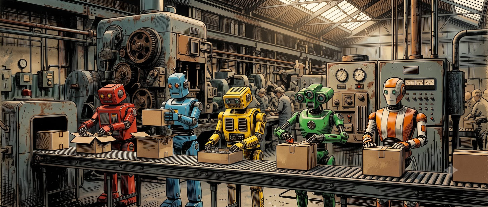
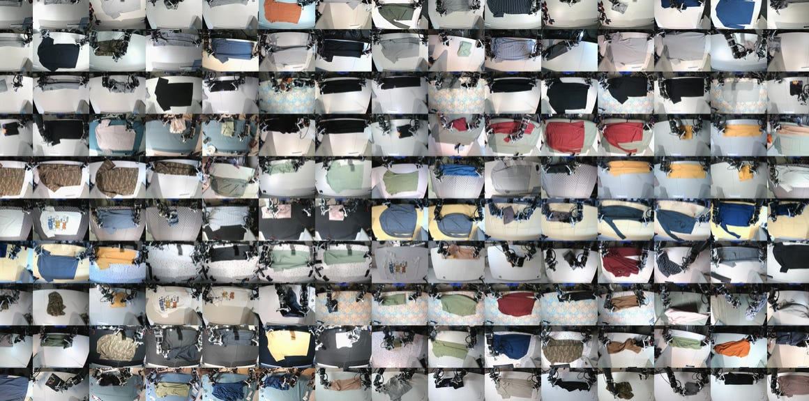
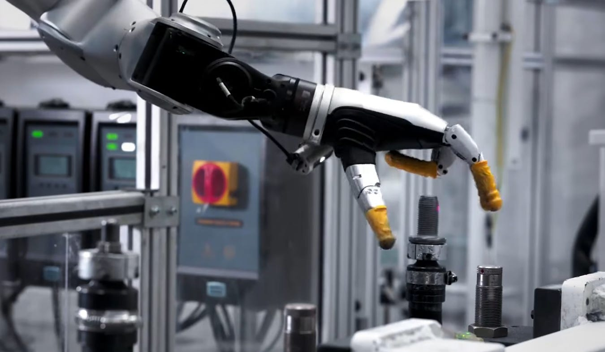
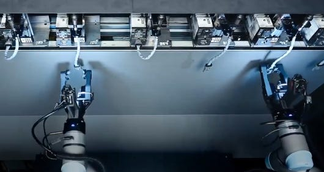
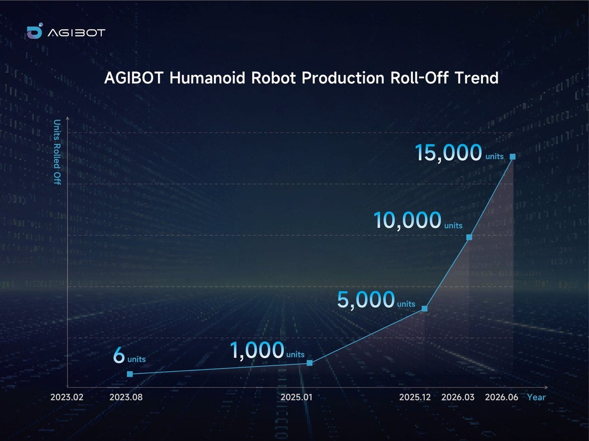

§030 秒速覽
四個關鍵數字，讀完就抓到全文骨架

§1核心論點：對「常識」的反駁
連 Tesla 都還沒靠純資料規模跑通，你的倉庫部署憑什麼？
近來機器人圈流行強調「真實世界部署」的重要性——這已成 common wisdom。表面上很合理：真實資料稀缺，而部署最終才是機器人公司的營收來源。
但 Paxton 提出反論：部署很重要，但大多數機器人部署本質上不可規模化——需要龐大的專門支援團隊與大量資源維護，而且這些部署產出的資料，「幾乎肯定比你以為的更沒價值」。
只有極少數類別的部署能近乎無限地規模化——例如自動駕駛。因為那個「單一任務」價值夠高，無止盡地蒐集同領域資料真的有效。但即使在這個對部署最有利的理想案例中，資料規模化至今仍然不夠：Tesla 擁有數百萬英里的駕駛資料，光靠這些資料並沒有做出完全自駕的 robotaxi——他們現在在 Austin 等城市部署的是「駕駛員在迴圈內」的 robotaxi，實質上是在蒐集介入資料（intervention data）來改進模型。
§2機器人任務的分佈：為什麼大家都在摺衣服？
現代機器人 demo 反覆出現同幾種任務，不是巧合

原文點名反覆出現的任務類型與代表公司：
| 任務類型 | 原文點名的公司／案例 |
|---|---|
| 剛性／半剛性 pick & place | 小米（引擎蓋放置任務） |
| 包裹重新定向（package reorientation） | Figure、Robotera |
| 裝箱（box packing） | Physical Intelligence、Ultra |
| 摺衣服 | HuggingFace、Sunday、Weave⋯⋯「以及更多」 |
共同點：這些任務都能在訓練過程中被「灌飽」（saturated）——在限縮的環境裡大量蒐集高品質資料、訓出高品質 policy，達到 97%–99.9% 以上的實用門檻。
但達標很慢：小米的自攻螺帽

為什麼慢？原文給的機制很簡單：policy 越好，就越難找到「稀有而有用的失敗」——而你需要那些失敗來蒐集改進資料。加上現代機器人學習效率不高，一個 corner case 往往要餵大量針對性資料才能解掉。
§3為什麼需要這麼多資料：18+6N 維的詛咒
一段國高中數學就能算出的絕望
每個機器人垂直領域都藏著大量內隱知識（implicit knowledge）——該領域工人「知道該怎麼實際上手對付東西」的那種知識，寫不進部落格、影片、甚至 ChatGPT。理論上，這種知識要從部署中來。
問題是——引用 Sumedh Sontakke 的說法——機器人問題的長尾「又長又肥」（long and fat）：你必須解掉非常多個、且每個都頻繁出現的獨立問題，通用機器人才開始有實用價值。
把維度攤開算
原文用最小表示法算一台雙臂移動操作機器人的自由度：軀幹 SE(2) 位姿（x, y, θ）＋軀幹高度 z ＝ 4 維；兩隻手臂末端各 6-DOF 位姿（roll, pitch, yaw, x, y, z）＝ 12 維；兩個夾爪開合 ＝ 2 維。機器人本體共 18 DoF，場景中每多一個物件再加 6 DoF。
現在想像對這 18 + 6N 個維度、每維均勻取樣區區 10 個值：
當然，這個空間裡真正有用的區域相對有限，但天真的窮舉探索顯然不可行。過去的解法：運動規劃用學習到的啟發式、取樣式規劃、監督式學習先驗來讓問題可解。機器人學習的目標就是：探索這個巨大的組合空間，盡可能覆蓋「對機器人可能重要」的所有區域，且解析度要夠。
§4尋找新穎性：部署恰恰給不了的東西
novelty pump — 這篇文章真正的關鍵詞
於是問題變成一個營運（operations）問題：怎麼探索這個巨大空間，同時找到所有可能與 policy 相關的小眾角落？
部署通常解決不了這個問題。原文給出兩個理由：
- 已部署的機器人很少遇到我們在乎的新情境——因為它們本來就必須以高成功率運作（換句話說：會被部署的任務，都是已經被磨到沒剩多少新鮮事的任務）；
- 就算真的遇到新情境，部署也是極沒效率的示範蒐集方式——你永遠無法完整探索一個失敗模式。
所以資料蒐集的目標應該是：持續發現並探索新的相關任務——刻畫出更廣的「機器人世界子空間」，讓 policy 更通用、更穩健。而能天然做到這件事的「飛輪」少之又少。
Physical Intelligence 的 Kyle Vedder 也寫了一篇（短得多的）文章表達類似觀點：
§5工業任務：乾脆不要飛輪
另一條完全合法的路——選一個根本不需要通用性的題目

這把我們留在哪？許多有趣的工業任務可以被緊緊限縮，用簡單、較小的 policy 就能部署——像 Sanctuary AI 這個插頭插入任務。
在這類任務中，需要探索的子空間極小，只要環境限縮得夠緊，就能在資料蒐集階段完全灌飽。這些任務今天就完美適合上產線自動化——而且，值得注意的是，這條路完全迴避了「從部署中學習」或任何「資料飛輪」的需求：直接選一個容易訓練的任務就好。
§6結語：兩條出路，以及規模的魔法
Paxton 最後其實是樂觀的——但要等

原文總結，大多數機器人部署有兩個致命傷：
- 新穎性引入速度不足——無法以有意義的速度提升模型的通用能力；
- 失敗＋修正資料產生速度不足——無法以合理速率改進模型。
那怎麼辦？原文給兩個選項：
§7我的重點筆記
讀後解析——這部分是本站觀點，不是原文內容
2025–2026 年幾乎每家人形機器人公司的 pitch deck 都有一頁「data flywheel」：部署越多 → 資料越多 → 模型越好 → 部署更多。Paxton（前 NVIDIA / Meta AI 機器人研究員，Substack「It Can Think」作者）這篇等於直接戳破該敘事的核心假設：飛輪要轉，資料必須帶新穎性；但能被部署的任務，恰恰是新穎性已被擰乾的任務。這與 Physical Intelligence 的 Kyle Vedder 一個月前的「novelty pump」論形成呼應——值得注意的是，連「賣通用 policy」的 PI 內部人都這樣說。
- 選擇偏差是整篇的邏輯核心。部署（deployment）本身就是一個過濾器：只有已被限縮到高成功率的任務才會被部署。所以「部署資料」在統計上天生偏向低資訊量樣本。這跟自駕的 intervention mining 不同——自駕是單一任務、無限 in-domain 變化，倉庫摺衣不是。
- 90.2%→98% 花 4 個月這個數字很值得記住：這是資源充沛的大廠（小米）在單一、已高度限縮任務上的改進速度。如果你的商業計畫需要「幾十個任務都到 99%」，時間軸自己乘上去。
- 維度計算是示意而非嚴謹論證——實際的有效資料流形遠小於 10^78（原文自己也承認「有用區域相對有限」），但方向正確：靠部署被動等 corner case 出現，數學上不划算。
- 與 KinetIQ 真機 RL 那篇（本站另一篇速覽）對照著讀很有意思：Humanoid 用真機 RL 在 3–5 天內把單任務從 78–80% 拉到 98–99%，正是 Paxton 說的「把限縮任務灌飽」的高效版本——但那同樣沒有回答「下一個任務怎麼辦」。兩篇合起來就是 2026 年機器人學習的真實處境：單任務磨到量產已可行，通用性仍靠資料新穎性，而新穎性沒有免費午餐。
- 留意作者沒說的：文中「資料能被使用與共享」的樂觀前提，在商業上恰恰最難成立——各家部署資料是核心資產，跨公司共享機制（類 Open X-Embodiment）目前只在學術圈成形。